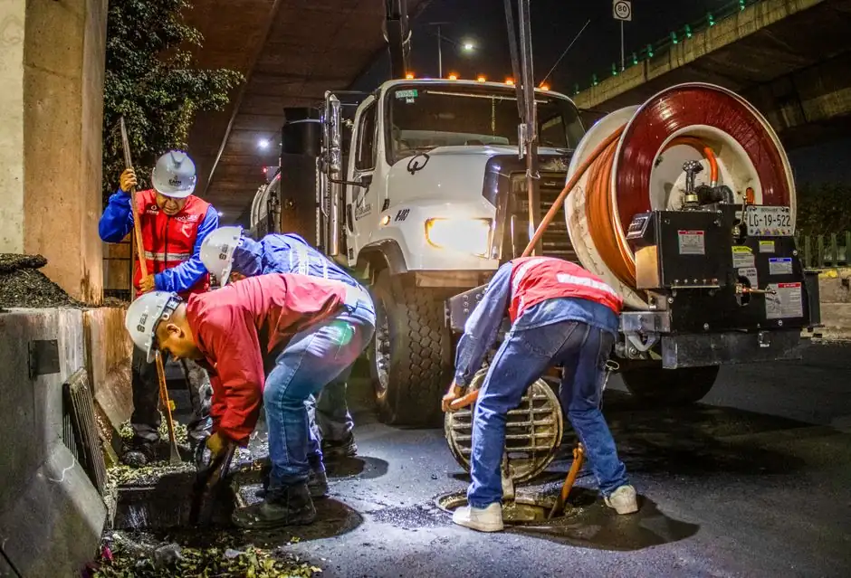
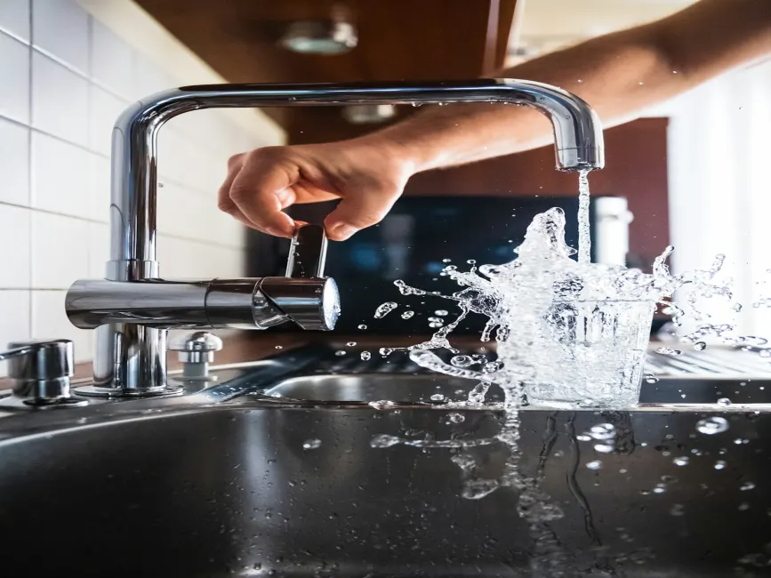

Drain Cleaning Services in Lely Resort, Naples, FL
Master-planned golf communities and seasonal resort rentals in Lely Resort place unique demands on residential plumbing. From private villas in Cordoba and Tiger Island to mid-rise condominiums in Ole and Greenlinks, kitchen grease, vacation rental wipes, and low-gradient sewer laterals require experienced local drain care. Naples Drain Pros provides upfront pricing and camera-first diagnostics across Lely Resort. We inspect the line first, explain exactly what is causing the blockage, and confirm a guaranteed flat price before any work begins. To explore our full Southwest Florida service offerings, see our central drain cleaning in Naples, FL page.
Golf Community CareVacation Rental SpecialistsCamera Inspected First
What Causes Clogged Drains in Lely Resort?
Lely Resort is an expansive 3,000-acre master-planned golf and country club community in southeast Naples, centered around three championship golf courses (Flamingo Island, Mustang, and The Classics) and the renowned Players Club & Spa. The community features a diverse mix of single-family golf estates, coach homes, and multi-unit condominium neighborhoods including Ole, Cordoba, Greenlinks, Sunstone, and Moorgate Point.
Most neighborhoods in Lely Resort were developed between the late 1990s and 2010s using modern schedule 40 PVC sewer pipe. However, because Lely Resort was engineered across flat former citrus and wetland terrain with extensive retention lakes, sewer laterals often have very slight slope gradients (pitch). During hot summer months, slow-moving wastewater allows heavy cooking grease and soap residues to settle along horizontal runs. In addition, rapid turnover in short-term seasonal rentals brings foreign debris like flushable wipes and paper towels into residential lines.
Landscape and Root Intrusion: Lush landscaping featuring royal palms, live oaks, queen palms, and bougainvillea whose fine hair roots can search out moisture along PVC joints and cleanout caps.
Utility Infrastructure: Wastewater services in Lely Resort are managed via the Collier County Water-Sewer District municipal sewer utility. Each property connects to county collection lines through an exterior ground-level cleanout, typically located near the front sod line or garage perimeter.

Local Neighborhood Insight: Landmarks around our service routes include The Players Club & Spa, Flamingo Island Golf Course, Mustang Course, Ole Village Center, Collier Blvd & US-41 corridor. For neighboring community drain coverage, explore East Naples, Naples Manor, Marco Island.
Properties We Serve in Lely Resort
Targeted drain and sewer solutions tailored to local architectural styles and property needs.
Ole & Greenlinks Condos & Flats
Navigating multi-unit HOA rules to clear shared kitchen vertical stacks, laundry lines, and bathroom branch drains cleanly.
Single-Family Golf Villas
Clearing long horizontal laterals connecting estate residences along the Flamingo and Mustang courses to county mains.
Seasonal Rental Properties
Rapid unclogging of toilets and kitchen disposals caused by vacation rental guests flushing wipes, grease, or fibrous food waste.
Coach & Carriage Homes
Clearing stubborn AC condensate line sludge and main floor branch drains in high-density carriage home associations.
Specialized Drain Services for Lely Resort
Professional grade equipment matched to the exact cause and depth of your drainage problem.
Sewer Line Cleaning
Heavy-duty continuous-feed mechanical augers to cut through roots, wipes, and dense blockages in main building laterals.
High-Pressure Hydro Jetting
Scouring grease, sand, and hard-water scale completely off interior pipe walls with 360-degree water pressure.
Sewer Camera Inspection
High-resolution fiber-optic video diagnosis with radio-sonde locator to identify crushed pipes, bellies, and root clusters.
Emergency Drain Clearing
Fast dispatch when toilets overflow, main drains back up, or wastewater threatens your living areas.
Honest Pricing for Lely Resort Drain Cleaning
We believe in straightforward, upfront pricing without hidden travel fees or surprise add-ons.
| Service Type | Typical Naples Range | What Is Included |
|---|---|---|
| Standard Fixture Clearing (Sink, Tub, Shower) | $100 – $270 | Mechanical snake cabling through trap/arm, clearing soap, hair & food debris. |
| Main Sewer Lateral Cabling | $180 – $400 | Power auger run through outside ground cleanout to clear roots, wipes & plugs. |
| High-Pressure Hydro Jetting | $350 – $700 | Full circumference high-PSI hydro wash to scour heavy grease, sand & mineral scale. |
| Sewer Camera Video Inspection | $200 – $400 | Complete optic survey with radio locating to pinpoint pipe depth, breaks & root ingress. |
Mandatory Pricing Disclaimer: Estimates reflect typical Naples, FL market ranges for standard residential access. Final price confirmed on-site before work begins. We do not charge hidden trip fees. For our full transparent price breakdown across Southwest Florida, visit our dedicated Naples drain cleaning cost guide.

How fast can you respond to a drain emergency in Lely Resort?
We are centrally based in Naples and regularly dispatch technicians to Lely Resort via Collier Boulevard and US-41. For urgent backups like overflowing toilets or standing shower water, we prioritize same-day emergency dispatch.
Why do seasonal vacation rentals in Lely Resort clog so frequently?
Vacation renters frequently flush paper towels, baby wipes, and feminine hygiene items labeled "flushable" that do not dissolve in flat Florida sewer laterals. Guests also pour cooking oils and bacon grease down kitchen sinks, which quickly solidifies inside horizontal PVC lines.
Do you work with Lely Resort HOAs and condo management rules?
Yes. We routinely service residences in Ole, Greenlinks, and surrounding associations. We comply with gate check-in requirements, observe designated contractor parking rules, and protect common corridors and luxury interiors with heavy-duty drop cloths and floor runners.
How much does drain clearing cost in Lely Resort?
Standard fixture cabling in Lely Resort typically ranges from $100 to $270 depending on access. Main sewer cleanout cabling generally ranges from $180 to $400, while high-pressure hydro jetting for stubborn grease ranges from $350 to $700. We diagnose the line first and provide a firm, upfront quote before work begins.
Nearby Communities We Service
In addition to Lely Resort, we dispatch drain specialists across adjacent Naples neighborhoods every day:
Need Reliable Drain Clearing in Lely Resort?
Tell us your neighborhood in Lely Resort—Ole, Cordoba, Greenlinks, or The Classics. We confirm our next open arrival window and quote upfront.
Contact Naples Drain Pros Dispatch
Call our central scheduling line for prompt residential, condominium, and commercial drain care in Lely Resort.